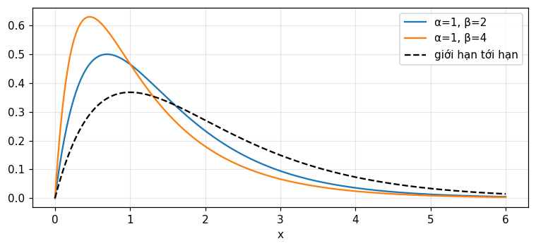
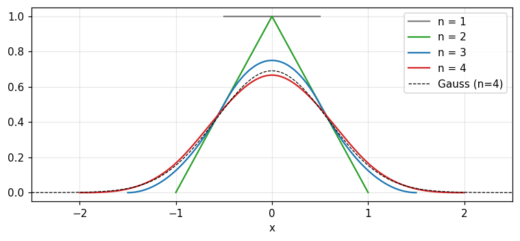
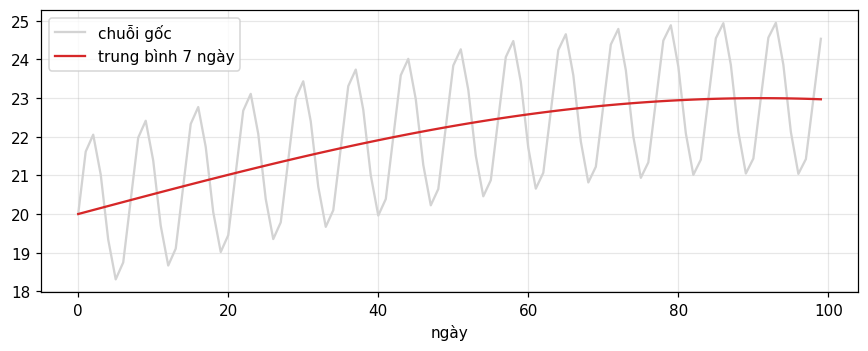
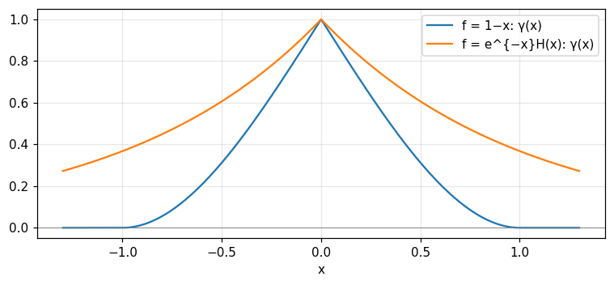

Tích chập là phép làm việc chung của mọi hệ tuyến tính bất biến; chương này dạy cách hình dung, tính tay, tính bằng máy, và các họ hàng của nó: tự tương quan, tương quan chéo, phổ năng lượng.
Định nghĩa tích chập và hình dung nó bằng bốn cách: diện tích, làm mượt, chồng chất, gập.
Tính tích chập của hàm mũ cắt cụt và của các dãy số bằng tay, kiểm bằng tổng các số hạng.
Đảo tích chập nối tiếp (chia dãy), dùng bảng dãy nghịch đảo, và viết tích chập dưới dạng ma trận.
Tính tích chập bằng máy, biết khi nào FFT bị cuộn vòng.
Dùng tự tương quan, tương quan chéo, tương quan bậc ba và phổ năng lượng, và biết chúng bỏ mất thông tin gì.
Dùng nút, chấm tròn hoặc phím ← → để chuyển slide.
PHẦN 1/5
01
Định nghĩa và các cách hình dung tích chập
Bối cảnh: Bạn đã thấy ở module 1 rằng đáp ứng của hệ tuyến tính bất biến là một tích chập.
Vướng mắc: Nhưng khi trình bày thẳng bằng tích phân, tích chập là một khái niệm khá khó nắm.
Giải pháp: Bracewell dạy nó bằng bốn cách nhìn bổ sung nhau, cùng các tính chất đại số như phép nhân.
Định nghĩa và các tên gọi khác
Bốn cách hình dung với số đo
Giao hoán, kết hợp, phân phối
1/5 · Định nghĩa và các cách hình dung tích chập
Một khái niệm nhiều tên
Tích chập xuất hiện ở nhiều nơi với nhiều tên: Faltung (tiếng Đức), tích thành phần ("composition product"), tích phân chồng chất, tích phân Duhamel, định lý Borel, trung bình trượt (có trọng số), hàm tương quan chéo, làm mượt, làm nhòe, quét (Bracewell, tr. 24).
1/5 · Định nghĩa và các cách hình dung tích chập
Định nghĩa
Tích chập của f(x) và g(x) cũng là một hàm của x, gọi là h(x) (tr. 24).
Theo Volterra, h là một phiếm hàm của f. Để tính h(x_1) ta cần biết f trên cả một khoảng x, trong khi một hàm của hàm f tại x=x_1 chỉ cần f(x_1) (tr. 25). Đây là lý do tích chập mô tả "trí nhớ" của hệ.
1/5 · Định nghĩa và các cách hình dung tích chập
Cách nhìn 1: diện tích của tích f(u)g(x-u)
Trong hình 3.1, tích f(u)g(x-u) được tô bóng và tung độ h(x) bằng diện tích phần tô (tr. 25). Ví dụ số: f=\Pi và g=e^{-u}H(u); tại x=1 diện tích chồng lấn là e^{-1/2}-e^{-3/2} = 0.3834 (tích phân số và công thức đóng trùng nhau).
1/5 · Định nghĩa và các cách hình dung tích chập
Cách nhìn 2: làm mượt
So với f, hàm h=f*g mượt hơn, rộng hơn và có tổng biến thiên nhỏ hơn (hình 3.2, tr. 25). Ví dụ: chuỗi \pm1 đảo dấu liên tục có tổng biến thiên 48; sau khi làm trung bình trượt 5 điểm còn 11.6.
1/5 · Định nghĩa và các cách hình dung tích chập
Cách nhìn 3 và 4: chồng chất và gập
Cách 3: chia f thành các cột nhỏ, mỗi cột "tan" thành một đống có dạng g đặt tại vị trí cột, rồi h(x) là tổng các đóng góp tại x (hình 3.3). Cách 4: gập g(u) quanh đường u=x/2, diện tích dưới tích f(u)g(x-u) chính là h(x) (hình 3.4) (tr. 25 đến 26).
Vì g bị đảo chiều trước khi nhân, tích chập giao hoán. Nó còn kết hợp (khi các tích phân tồn tại) và phân phối trên phép cộng, nên dấu * cư xử như dấu nhân trong biến đổi hình thức (tr. 26 đến 27). Notebook kiểm cả ba tính chất trên dãy ngẫu nhiên: 3 trên 3 đều đúng.
Ý nghĩa vật lý: mọi phép quan sát đều là một tích chập
Tích chập mô tả tác động của một dụng cụ khi lấy trung bình có trọng số một đại lượng vật lý trên một khoảng hẹp của một biến. Khi dạng của hàm trọng số không đổi theo vị trí, đại lượng quan sát được là tích chập chứ không phải đại lượng cần đo. Mọi phép quan sát đều bị giới hạn bởi độ phân giải của dụng cụ, chỉ riêng điều này đã làm tích chập có mặt khắp nơi (tr. 24). Sự xuất hiện của tích chập trùng với tuyến tính cộng bất biến, và với "đáp ứng điều hòa với kích thích điều hòa".
1/5 · Định nghĩa và các cách hình dung tích chập
Tự kiểm tra phần 1
Vì sao tích chập giao hoán dù g bị đảo chiều còn f thì không?
Vì sao gọi h(x) là một phiếm hàm của f?
Khi nào ảnh quan sát được là tích chập của vật với dụng cụ?
Gợi ý: đổi biến u\to x-u; cần f trên cả khoảng; khi hàm trọng số không đổi theo vị trí.
PHẦN 2/5
02
Các ví dụ tích chập và cách dựng đồ thị
Bối cảnh: Công thức tích chập dễ sai cận tích phân và dấu.
Vướng mắc: Một phép tính đại số sai một chút có thể đổi hoàn toàn kết quả.
Giải pháp: Tính vài ví dụ kinh điển rồi kiểm bằng cách dựng đồ thị (tờ giấy trượt) và bằng các quy tắc diện tích, phương sai.
Hai hàm mũ cắt cụt và các giới hạn
Tờ giấy trượt
Lặp tích chập và quy tắc phương sai
2/5 · Các ví dụ tích chập và cách dựng đồ thị
Tích chập của hai hàm mũ cắt cụt
Đặt E(x)=e^{-x}H(x). Với hai hằng số suy giảm dương khác nhau \alpha,\beta, Bracewell tính (tr. 27):
Kết quả là hiệu của hai hàm mũ cắt cụt cùng biên độ. Nó mô tả nồng độ một đồng vị phân rã với hằng số \alpha trong khi được bổ sung từ đồng vị mẹ phân rã với hằng số \beta. Với \alpha=1,\beta=2 tại x=1: tích phân số và công thức cho 0.4651. Khi x\to\infty chỉ còn số hạng suy giảm chậm hơn (tr. 28).

Hình 1. Tích chập của hai hàm mũ cắt cụt: hiệu hai hàm mũ (đường màu) tăng rồi giảm; khi β tiến về α (đường đứt) thành x·e^{−x}.
2/5 · Các ví dụ tích chập và cách dựng đồ thị
Giới hạn \beta\to\alpha: bộ cộng hưởng tới hạn
Lấy giới hạn \beta-\alpha\to0 ta có \alpha E(\alpha x)*\alpha E(\alpha x)=\alpha^2xE(\alpha x). Hàm này mô tả đáp ứng của bộ cộng hưởng tắt dần tới hạn, như điện kế không dao động, với một xung tác động (tr. 28). Với \alpha=1 tại x=2: 0.2707.
\alpha E(-\alpha x)*\beta E(\beta x) cho một hàm nhọn tại gốc, suy giảm với hằng số \alpha về bên trái và \beta về bên phải (tr. 28 đến 29). Với \alpha=1,\beta=2: tại x=-1 là 0.2453, tại x=+1 là 0.0902, nên bên phải rơi nhanh hơn.
Để kiểm phép tính, vẽ một hàm đảo ngược lên một tờ giấy rồi trượt dọc trục hoành. Khi tờ giấy ở bên trái, tích bằng 0. Rồi tích phân bắt đầu khác 0, tăng gần tuyến tính, đạt cực đại rồi giảm. Bằng cách này ta thấy ngay các đuôi ngược chiều, chỗ không có đoạn bằng 0 và bước nhảy độ dốc tại gốc (tr. 29 đến 30). Chuyên gia làm việc này trong đầu.
2/5 · Các ví dụ tích chập và cách dựng đồ thị
Lặp tích chập xung chữ nhật
\Pi*\Pi=\Lambda (tam giác), rồi \Pi*\Pi*\Pi là một đường parabol từng khúc. Notebook lặp tích chập trên lưới mịn: tại x=0 giá trị là 0.75 (đúng 3/4) và tại x=1 là 0.125 (đúng 1/8). Mỗi lần tích chập, hình dạng mượt hơn và trông giống Gauss hơn.

Hình 2. Lặp tích chập của xung chữ nhật: xung, tam giác, parabol từng khúc, rồi n = 4 gần trùng đường Gauss cùng phương sai (nét đứt).
2/5 · Các ví dụ tích chập và cách dựng đồ thị
Quy tắc diện tích và phương sai
Với các hàm diện tích 1, tích chập nhân diện tích (nên vẫn diện tích 1) và cộng phương sai. Ví dụ e^{-x}H(x) (phương sai 1) chập với \Pi (phương sai 1/12) cho phương sai 1.0833 và diện tích 1. Lặp n lần \Pi có phương sai n/12; độ lệch tối đa so với Gauss cùng phương sai là 0.0243 khi n=4 và 0.0092 khi n=8.
Cộng phương sai
\sigma^2_{f*g}=\sigma^2_f+\sigma^2_g\quad(\text{với diện tích 1})
2/5 · Các ví dụ tích chập và cách dựng đồ thị
Tự kiểm tra phần 2
Khi \beta\to\alpha kết quả tiến về hàm nào?
Bên nào của \alpha E(-\alpha x)*\beta E(\beta x) suy giảm nhanh hơn nếu \beta>\alpha?
Phương sai của tích chập của ba xung chữ nhật là bao nhiêu?
Gợi ý: \alpha^2xE(\alpha x); bên phải; 3/12=1/4.
PHẦN 3/5
03
Tích chập nối tiếp: dãy số, phép chia và ma trận
Bối cảnh: Khi tính số, ta thay hàm bằng dãy giá trị cách đều.
Vướng mắc: Phép tính đó trùng với nhân đa thức, và ta muốn cả chiều ngược lại: biết tích và một thừa số, tìm thừa số còn lại.
Giải pháp: Tích chập nối tiếp, bảng dãy nghịch đảo và biểu diễn ma trận trả lời cả hai.
Đa thức và dãy số
Chia dãy và bảng 3.1
Ma trận Toeplitz và hệ thay đổi theo thời gian
3/5 · Tích chập nối tiếp: dãy số, phép chia và ma trận
Nhân đa thức chính là tích chập nối tiếp
Tích của hai đa thức a_0+a_1x+\dots và b_0+b_1x+\dots có hệ số c_0=a_0b_0, c_1=a_0b_1+a_1b_0, c_2=a_0b_2+a_1b_1+a_2b_0, ... Đó chính là các tổng của tích chập rời rạc (Bracewell, tr. 30). Notebook so polymul với convolve và thấy trùng.
Tích chập nối tiếp
h_i=\sum_{j}f_j\,g_{i-j},\qquad \{h\}=\{f\}*\{g\}
3/5 · Tích chập nối tiếp: dãy số, phép chia và ma trận
Độ dài và tổng: hai phép kiểm nhanh
Tích chập nối tiếp dài hơn từng thành phần: số số hạng bằng tổng hai độ dài trừ một. Tổng các số hạng bằng tích hai tổng, một phép kiểm số rất quý. Nếu một dãy có tổng bằng 1 thì tổng tích bằng tổng dãy kia (tr. 32). Ví dụ: dãy 7 số hạng chập dãy 4 số hạng cho 10 số hạng.
3/5 · Tích chập nối tiếp: dãy số, phép chia và ma trận
Dãy nửa vô hạn và hai phía
Dãy nửa vô hạn như \{1,1\}*\{1,2,3,\dots\}=\{1,3,5,7,\dots\} vẫn cho tích chập nối tiếp hợp lệ vì mỗi số hạng chỉ có hữu hạn số hạng cộng lại. Nhưng nếu hai dãy kéo dài ngược chiều thì mỗi số hạng là tổng vô hạn và có thể không tồn tại. Với dãy hai phía phải nêu rõ gốc, ví dụ bằng mũi tên (tr. 32 đến 33).
3/5 · Tích chập nối tiếp: dãy số, phép chia và ma trận
Các dãy đặc biệt
Dãy \{\dots0,0,1,0,0,\dots\} đóng vai trò như xung: chập với nó không đổi gì. \{1,-1\} lấy sai phân bậc nhất. \frac1n\{1,\dots,1\} (n số hạng) là trung bình trượt; ví dụ trung bình tuần của số liệu ngày là \frac17\{1,1,1,1,1,1,1\}. \{1,1,1,\dots\} cho tổng chạy (tr. 33).
3/5 · Tích chập nối tiếp: dãy số, phép chia và ma trận
Thử số: tổng chạy và sai phân là hai phép nghịch đảo
Với dãy \{3,1,4,1,5,9,2,6\}, tổng chạy có số cuối 31, và lấy sai phân bằng \{1,-1\}* trả lại đúng dãy gốc. Đây là hệ thức \{1,1,1,\dots\}*\{1,-1\}=\{1,0,0,\dots\} (tr. 34): hai dãy nghịch đảo của nhau, như tích phân và đạo hàm.
3/5 · Tích chập nối tiếp: dãy số, phép chia và ma trận
Dãy nghịch đảo
Dãy nghịch đảo \{f\}^{-1} của \{f\} thỏa \{f\}^{-1}*\{f\}=\{1,0,0,\dots\}. Nếu \{f\}*\{g\}=\{h\} và biết \{f\}, \{h\} thì \{g\}=\{f\}^{-1}*\{h\}. Ví dụ \{1,2,3,4,\dots\} và \{1,-2,1\} là cặp nghịch đảo (tr. 34). Notebook kiểm: 2 trên 2 cặp đúng.
3/5 · Tích chập nối tiếp: dãy số, phép chia và ma trận
Chia dãy: tìm thừa số còn lại
Muốn giải \{1,1\}*\{g\}=\{1,3,3,1\}, có thể chia đa thức hoặc dùng cách của Bracewell: g_0=h_0/f_0, rồi mỗi số hạng tiếp theo bằng h_k trừ tổng các tích đã biết, chia cho f_0 (tr. 34 đến 36). Cả hai cho \{g\} = (1 2 1).
Đệ quy chia dãy
g_k=\frac{h_k-\sum_{j=1}^{k}f_j\,g_{k-j}}{f_0}
3/5 · Tích chập nối tiếp: dãy số, phép chia và ma trận
Bảng 3.1: các dãy và nghịch đảo
Bracewell liệt kê các cặp thường gặp (tr. 37); notebook kiểm 6 trên 6 cặp đầu bằng nhân rồi xem {1, 0, 0, ...}.
Dãy
Nghịch đảo
\{1,1\}
\{1,-1,1,-1,\dots\}
\{1,-1\}
\{1,1,1,1,\dots\}
\{1,0,1\}
\{1,0,-1,0,1,\dots\}
\{1,2,1\}
\{1,-2,3,-4,\dots\}
\{1,-a\}
\{1,a,a^2,\dots\}
\{1,-a\}^{*2}
\{1,2a,3a^2,\dots\}
3/5 · Tích chập nối tiếp: dãy số, phép chia và ma trận
Dạng ma trận và hệ thay đổi theo thời gian
Tích chập nối tiếp viết được thành nhân một ma trận vuông (mỗi hàng là dãy \{f\} đảo ngược, dịch một bước) với một vector cột. Ma trận này là ma trận Toeplitz. Cách viết hy sinh tính giao hoán nhưng cho phép tổng quát hóa: nếu các hàng thay đổi ta được phép biến đổi tuyến tính tổng quát, không phải bất biến. Với hệ thay đổi theo thời gian (như chiết áp chạy bằng động cơ), đáp ứng không còn là tích chập và "đáp ứng điều hòa với kích thích điều hòa" cũng hỏng (tr. 37 đến 39). Notebook kiểm: nhân ma trận Toeplitz và convolve trùng nhau (yes).
PHẦN 4/5
04
Tích chập bằng máy tính
Bối cảnh: Định lý tích chập (chương 6) gợi ý tính tích chập qua FFT.
Vướng mắc: Nhưng không phải lúc nào FFT cũng nhanh hơn, và dùng sai sẽ cho kết quả cuộn vòng.
Giải pháp: Viết trực tiếp phép tính tay, đếm phép nhân, biết các chế độ độ dài, và tránh bẫy cuộn vòng.
Đoạn mã trực tiếp và các chế độ độ dài
Đếm phép nhân: trực tiếp so với FFT
Bẫy cuộn vòng và ví dụ trung bình tuần
4/5 · Tích chập bằng máy tính
Mã tính trực tiếp
Bracewell viết đoạn mã ngắn cho tích chập trực tiếp: với hai dãy độ dài l_f và l_g, tích chập có độ dài l_h=l_f+l_g-1, và mỗi h(I) cộng các tích f(J)g(K) với K=I-J+1 (tr. 40). Trong ứng dụng lọc dữ liệu dài, đoạn mã này thường chạy nhanh hơn phương pháp biến đổi viết cùng ngôn ngữ (tr. 40).
4/5 · Tích chập bằng máy tính
Thử số: mã tay so với convolve
Notebook dịch đoạn mã sang Python và so với numpy.convolve trên hai cặp dãy ngẫu nhiên (độ dài 200 và 37, rồi 5 và 5): kết quả trùng tới sai số làm tròn, lệch lớn nhất 5.3e-15.
4/5 · Tích chập bằng máy tính
Ba chế độ độ dài
Với hai dãy độ dài 10 và 4: chế độ full (mọi vị trí chồng lấn) cho 13 số hạng, same cho 10 (cùng độ dài dãy dài) và valid (chỉ nơi hai dãy chồng lấn hoàn toàn) cho 7. Khi làm mượt số liệu, hãy nhớ rằng bờ dữ liệu bị ảnh hưởng.
Trực tiếp cần l_fl_g phép nhân. Qua FFT cần ba phép biến đổi độ dài N\ge l_f+l_g-1, cỡ 3N\log_2N phép tính (ước lượng bậc độ lớn). Với l_f=10^5 và bộ lọc ngắn l_g=32: trực tiếp 3,200,000, FFT cỡ 6,684,672, cùng bậc. Với bộ lọc dài l_g=2000: trực tiếp 200,000,000, FFT vẫn cỡ 6,684,672, nhanh hơn rõ rệt.
Lưu ý
Đây là số phép tính ước lượng chứ không phải thời gian chạy. Thời gian thật còn phụ thuộc phần cứng và thư viện; hãy đo trên máy của bạn.
4/5 · Tích chập bằng máy tính
Bẫy cuộn vòng
Nhân hai FFT có độ dài N nhỏ hơn l_f+l_g-1 cho tích chập vòng, không phải tích chập thẳng: phần đuôi cuộn về đầu (chương 11 sẽ gọi là tích chập tuần hoàn). Với f dài 8, g dài 3 và N=8, hai kết quả lệch nhau tới 1.09 ở các số hạng đầu. Đệm số 0 tới N\ge l_f+l_g-1 thì lệch chỉ 4.4e-16.
4/5 · Tích chập bằng máy tính
Ví dụ: trung bình 7 ngày loại chu kỳ tuần
Bracewell nhắc rằng trung bình trượt dùng để làm mượt số liệu khí tượng (tr. 33). Với chuỗi 364 ngày có xu hướng mùa biên độ 3 và chu kỳ tuần biên độ 2, trung bình 7 ngày (đóng vòng) đưa biên độ tuần từ 2 xuống 0 và giữ biên độ mùa 2.9982 (lý thuyết 2.9982). Hai cách tính, tích chập vòng và FFT, trùng nhau.

Hình 3. Chuỗi nhiệt độ ngày có chu kỳ tuần (xám) và sau trung bình 7 ngày (đỏ): chu kỳ tuần biến mất, xu hướng mùa còn nguyên.
4/5 · Tích chập bằng máy tính
Thư viện ma trận và tích chập
Trong các gói phần mềm dựa trên phép toán ma trận, tích chập thường được dựng thành tích của một ma trận vuông với một vector cột, và người ta coi thời gian mất vì kém hiệu quả là không đáng kể (tr. 38). Thực hành hiện nay dùng hàm chuyên dụng (convolve, fftconvolve) vì chúng chọn cách tính hợp lý theo độ dài.
4/5 · Tích chập bằng máy tính
Tự kiểm tra phần 4
Tích chập hai dãy độ dài 12 và 5 có bao nhiêu số hạng ở chế độ full và valid?
Vì sao nhân hai FFT độ dài N=8 của dãy dài 8 và dãy dài 3 cho kết quả sai?
Với bộ lọc rất ngắn, phương pháp nào thường kinh tế hơn?
Gợi ý: 16 và 8; vì tích chập vòng cuộn đuôi; tính trực tiếp.
PHẦN 5/5
05
Tự tương quan, tương quan chéo và phổ năng lượng
Bối cảnh: Nếu không đảo chiều một thừa số trước khi nhân và lấy tích phân, ta được tương quan chứ không phải tích chập.
Vướng mắc: Tương quan đo độ giống nhau khi dịch, nhưng bỏ mất một phần thông tin (pha, chiều thời gian).
Giải pháp: Tự tương quan, tương quan bậc ba, tương quan chéo và phổ năng lượng, cùng cái giá của chúng.
Tự tương quan: định nghĩa, ví dụ, cực đại tại gốc
Mất pha, tương quan bậc ba, tương quan chéo
Phổ năng lượng và dãy xung có tự tương quan tốt
5/5 · Tự tương quan, tương quan chéo và phổ năng lượng
Tự tương quan: định nghĩa
Tự chập của f là \int f(u)f(x-u)du. Nếu trước khi nhân ta không đảo một thừa số thì có tích phân dưới đây, viết là f\star f (dấu sao năm cánh, "pentagram"). Nếu f thực thì f\star f là hàm chẵn, điều không đúng với tích chập nói chung (Bracewell, tr. 40 đến 41).
5/5 · Tự tương quan, tương quan chéo và phổ năng lượng
Chuẩn hóa và cực đại tại gốc
Chia cho giá trị tại gốc ta có \gamma(x) với \gamma(0)=1. Phụ lục chứng minh tự tương quan không vượt giá trị tại gốc: xét \int[f(u)+\varepsilon f(u+x)]^2du\ge0, tam thức bậc hai theo \varepsilon không có nghiệm thực nên b^2-4ac<0, cùng lý luận với bất đẳng thức Schwarz (tr. 41, 48 đến 49). Notebook kiểm trên dãy ngẫu nhiên: tỉ số lớn nhất của các thùy phụ với đỉnh là 0.2821.
5/5 · Tự tương quan, tương quan chéo và phổ năng lượng
Ví dụ 1: f=1-x trên (0,1)
Với 0<x<1: \int f(u)f(u+x)du=\tfrac13-\tfrac x2+\tfrac{x^3}6, giá trị tại gốc là \tfrac13, nên \gamma(x)=1-\tfrac32|x|+\tfrac12|x|^3 và \gamma=0 khi |x|>1. Tại x=0.25: 0.6328; tại x=0.5: 0.3125. Diện tích của tử số là 0.25, đúng bình phương diện tích của f (1/2)^2 (tr. 41 đến 42).

Hình 4. Hai tự tương quan chuẩn hóa của chương: đa thức bậc ba cắt tại |x| = 1 và hàm mũ đối xứng, cả hai có cực đại 1 tại gốc.
5/5 · Tự tương quan, tương quan chéo và phổ năng lượng
Ví dụ 2: f=e^{-x}H(x)
Với f(x)=e^{-x}H(x): \int f(u)f(u+x)du=\tfrac12e^{-|x|} nên \gamma(x)=e^{-|x|} (tr. 42). Tại x=1: tích phân số cho 0.3679, đúng e^{-1}. Tự tương quan là hàm chẵn dù f chỉ nằm ở nửa dương.
5/5 · Tự tương quan, tương quan chéo và phổ năng lượng
Dữ liệu chạy mãi: đoạn hữu hạn và giới hạn C(x)
Hàm chạy vô hạn thường làm tích phân vô hạn không tồn tại. Cách xử lý là xét một đoạn độ dài X và thay giá trị ngoài đoạn bằng 0, đúng như khi tính trên dữ liệu quan sát hữu hạn. Khi X tăng, \gamma có thể tiến về giới hạn C(x) (tr. 42 đến 43). Khi biến là thời gian, ta viết bằng trung bình thời gian \langle V(t)V(t+\tau)\rangle (tr. 44).
5/5 · Tự tương quan, tương quan chéo và phổ năng lượng
Ba sóng hình sin: pha biến mất
Với V=A\sin(\alpha t+\phi)+B\sin(\beta t+\chi)+C\sin(\gamma t+\psi), tự tương quan giới hạn là chồng ba cosin cùng tần số nhưng biên độ tương đối khác, không còn dấu vết của pha (tr. 43 đến 45). Số đo: A,B,C=2,1,0.5 ở 3, 5, 8 Hz; C(0.05) = 0.4093 với cả hai bộ pha khác nhau (lệch tối đa 2.2e-16).
5/5 · Tự tương quan, tương quan chéo và phổ năng lượng
Tự tương quan không khả nghịch
Vì pha bị mất, không thể từ tự tương quan quay về hàm gốc: tự tương quan là một mất mát thông tin. Trong giao thoa vô tuyến và nhiễu xạ tia X, quan sát tự tương quan dễ hơn quan sát chính hàm, và người ta dồn nhiều công sức để khôi phục thông tin mất (tr. 45). Từ mọi hàm có cùng tự tương quan, hàm gồm toàn cosin có tính duy nhất riêng.
5/5 · Tự tương quan, tương quan chéo và phổ năng lượng
Tương quan bậc ba: giữ chiều của thời gian
Tự tương quan không biết chiều thời gian: nhiễu qua bộ lọc RC e^{-t/RC}H(t) thống kê có thể khác khi phát ngược, nhưng tự tương quan không thấy. Tương quan bậc ba U(x_1,x_2)=\int f(x)f(x+x_1)f(x+x_2)dx thì thấy (tr. 45 đến 46). Bracewell ghi rằng \{1,2,3\} và \{3,2,1\} cho hai mảng khác nhau. Notebook xác nhận: hai dãy có cùng tự tương quan (yes) nhưng mảng bậc ba khác nhau (yes); tâm U(0,0)=\sum f^3 = 36 và tổng mọi phần tử (\sum f)^3 = 216.
Mảng của \{1,2,3\} (hàng x_1=-2,\dots,2, cột x_2=-2,\dots,2):
5/5 · Tự tương quan, tương quan chéo và phổ năng lượng
Tương quan chéo và ký hiệu sao năm cánh
Tương quan chéo của g và h là g\star h=\int g(u-x)h(u)du: giống tích chập nhưng g chỉ dịch, không đảo. Đọc là "g quét h". Nó không giao hoán, nhưng g\star h(x)=h\star g(-x) (tr. 46). Với hàm phức phải dùng g^*, và đặt sai vị trí dấu sao sẽ cho liên hợp của kết quả chuẩn (tr. 41, 47).
Notebook kiểm hệ thức với dãy rời rạc: đúng (yes), và g\star h\ne h\star g nói chung (yes).
5/5 · Tự tương quan, tương quan chéo và phổ năng lượng
Phổ năng lượng
Bình phương môđun của biến đổi, |F(s)|^2, là phổ năng lượng. Không có tương ứng một-một với f: cần cả pha. Thông tin mất giống hệt thông tin mất khi dùng tự tương quan, và định lý tự tương quan (chương 6) diễn đạt sự tương đương đó (tr. 47). Notebook kiểm bản rời rạc: biến đổi ngược của |X|^2 trùng tự tương quan vòng (lệch 7.1e-15), và hai tín hiệu khác pha có cùng phổ năng lượng (lệch 2.3e-10).
Phổ năng lượng và tự tương quan
f\star f\ \supset\ |F(s)|^2
5/5 · Tự tương quan, tương quan chéo và phổ năng lượng
Phổ năng lượng tích lũy và vạch phổ
Vì |F|^2 là mật độ năng lượng theo s, một vạch phổ mang năng lượng hữu hạn làm mật độ vô hạn. Ta dùng phổ tích lũy \int_0^s|F|^2ds: mỗi vạch là một bước nhảy hữu hạn (hình 3.12, tr. 47 đến 48). Số đo: tín hiệu gồm sóng 50 Hz biên độ 3 cộng nhiễu, phần năng lượng tích lũy trước 49 Hz là 0.005 và sau 51 Hz là 0.951: bước nhảy tại vạch 50 Hz là 0.946 tổng năng lượng.
5/5 · Tự tương quan, tương quan chéo và phổ năng lượng
Dãy xung có tự tương quan tốt: \{1100101\}
Bài tập 1(j), (k) và tài liệu Pettit (1967) trong thư mục nhắc tới dãy xung có tính tự tương quan tốt. Với \{1,1,0,0,1,0,1\}, tự tương quan thẳng có đỉnh 4 tại gốc và thùy phụ lớn nhất 1; tự tương quan vòng bằng 2 tại mọi độ dịch khác 0, gần như phẳng. Tính chất này là lý do dãy như vậy dùng cho radar và đồng bộ.
Liên hệ chéo
Barkat dùng đúng các hàm này cho quá trình ngẫu nhiên: mục 3.3 (tính chất của hàm tương quan, gồm cực đại tại gốc) và mục 3.5 (mật độ phổ công suất). Module 12 ghép hai sách ở điểm này.
TỔNG KẾT
Điều cần mang theo
Tích chập có bốn cách nhìn (diện tích, làm mượt, chồng chất, gập) và cư xử như phép nhân: giao hoán, kết hợp, phân phối.
Với diện tích 1, tích chập nhân diện tích và cộng phương sai; lặp lại nhiều lần tiến về Gauss.
Tích chập nối tiếp là nhân đa thức; kiểm bằng tổng và độ dài; đảo bằng chia dãy hoặc bảng nghịch đảo.
Tính bằng máy: mã trực tiếp cần l_fl_g phép nhân; FFT phải đệm số 0 để tránh cuộn vòng.
Tự tương quan có cực đại tại gốc, chẵn với hàm thực, và mất pha; tương quan bậc ba giữ chiều thời gian; phổ năng lượng |F|^2 tương đương tự tương quan.
📜 Bối cảnh lý thuyết & lịch sử
Chương 3 mở đầu bằng loạt tên gọi của tích chập ở các ngành: Faltung của tiếng Đức, "composition product" thích nghi từ tiếng Pháp, tích phân Duhamel, định lý Borel (tr. 24). Việc quy về một khái niệm duy nhất là điều Bracewell muốn khuyến khích khi nói rằng ý thức về "tính đồng nhất" của tích chập đang lan rộng.
Ký hiệu sao năm cánh cho tương quan chéo và cách đọc "g quét h" là đề xuất của giáo trình (tr. 46). Tương quan bậc ba được nhắc tới cùng tài liệu của Weigelt (1991), và dãy xung có tự tương quan tốt cùng tài liệu của Pettit (1967) (tr. 49).
Bibliography cũng nêu bài của Bracewell và Roberts (1954) về làm mượt ăng-ten trong thiên văn vô tuyến, một ví dụ cụ thể của tích chập giữa bầu trời và chùm ăng-ten (tr. 49).
🔎 Case study thực tế
Làm mượt số liệu khí tượng. Một chuỗi nhiệt độ ngày (364 ngày) có xu hướng mùa biên độ 3 và chu kỳ tuần biên độ 2. Trung bình trượt 7 ngày là tích chập với \frac17\{1,1,1,1,1,1,1\}. Nó đưa thành phần tuần từ 2 xuống 0 (một điểm không của đáp ứng tần số) mà vẫn giữ 2.9982 trên 2.9982 lý thuyết của thành phần mùa. Đây đúng là điều Bracewell mô tả khi nói trung bình tuần của số liệu ngày.
Kết luận chung: chọn độ dài cửa sổ bằng đúng chu kỳ cần loại thì tích chập có điểm không tại chu kỳ đó. Đó là ý nghĩa thực dụng của việc nhìn tích chập trong miền tần số.
Notebook tự sinh dữ liệu bằng mã, không cần tải file ngoài. Mọi con số trên trang này được in ra từ notebook và đối chiếu bằng hai phương pháp độc lập.
⚠️ Những bẫy diễn giải sai
"Tích chập là nhân từng điểm hai hàm."
Tích chập cần f trên cả một khoảng để tính một giá trị h(x). Chỉ trong miền tần số nó mới trở thành phép nhân từng điểm (module 6).
"Tự tương quan và tích chập là một."
Khác ở chỗ có đảo chiều hay không. Tự tương quan của hàm thực luôn chẵn (0.3679 cho e^{-x}H(x) tại x=1 và cũng tại -1), còn tích chập nói chung thì không (tr. 40 đến 41).
"Nhân hai FFT luôn cho tích chập thẳng."
Chỉ khi độ dài N\ge l_f+l_g-1 (đệm số 0). Nếu không có cuộn vòng: lệch 1.09 trong ví dụ của module.
"Từ tự tương quan có thể khôi phục tín hiệu."
Pha bị mất: hai bộ pha khác nhau cho cùng C(0.05) = 0.4093 (lệch 2.2e-16). Chỉ thu được biên độ phổ, không có pha (tr. 45).
✅ Quiz tự kiểm tra
Bấm một đáp án để chấm ngay và xem giải thích. Kết quả không được lưu.
Nguồn tham khảo
R. N. Bracewell, The Fourier Transform and Its Applications, 3rd ed., McGraw-Hill, 2000, chương 3 (tr. 24 đến 50, gồm phụ lục, thư mục và bài tập 1).
M. Barkat, Signal Detection and Estimation, 2nd ed., Artech House, 2005, mục 3.3 và 3.5, chỉ dẫn tới ở phần liên hệ chéo.
Nội dung được viết với sự hỗ trợ của AI (Claude), rồi được kiểm lại. Mọi con số do notebook Jupyter tính ra và đối chiếu bằng hai phương pháp độc lập; số trang trích dẫn lấy từ văn bản OCR của hai giáo trình gốc. Vẫn có thể còn sai sót, mong bạn báo lại.